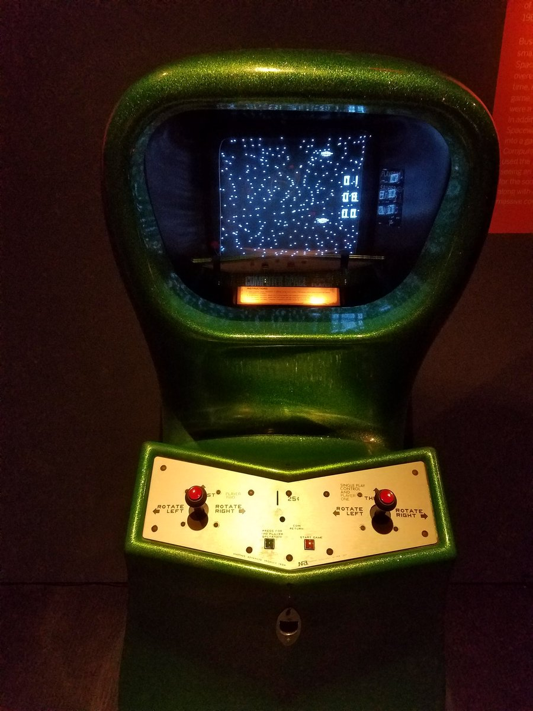

A evolução dos
jogos
Apresentado por:
Carlos Magno Nascimento
Giovanni Nunes
No princípio...
Diversão
Interação
Competição
E hoje?
Os
jogos
evoluíram e hoje proporcionam muito mais do que apenas diversão
Os jogos agora possuem a sua própria e única
cultura
Podem ser um tipo de
esporte
Uma
indústria
gigantesca
Se transformaram em uma forma de
arte
São também uma forma de se expressar e de conhecer
Neles, você pode ser desde a um
piloto
de corrida
Até um
explorador intergalático
Os
jogos
são um jeito engraçado de se contar
histórias
E de se
conectar
pessoas
Sejam Bem-vindos
A história e evolução dos
jogos
A história começa em
1958
Quando William Higinbotham e Robert Dvorak desenvolvem o
Tennis for Two
Feito com um
osciloscópio
para a exposição do Laboratório Nacional de Brookhaven
Curiosidade: Willian trabalhou no
Projeto Manhattan
Em
1961
, alunos do MIT desenvolvem o
Spacewar
Um jogo multiplayer de tiro
programado em um
DEC PDP-1
PCs
ainda não haviam sido inventados
A
ARPANET
ainda não havia sido criada
As pesquisas a respeito da
comutação de pacotes
haviam apenas começado

O nascimento do
Arcade
Em
1971
surge o
Computer Space
Uma espécie de reboot do Spacewar desenvolvido por Nolan Bushnell e Ted Dabney
Em
1972
, Nolan e Ted fundam a
Atari
No mesmo ano, o primeiro jogo eletrônico lucrativo da história é lançado: o
pong
O
Magnavox Odyssey
, é lançado em
1972
É considerado o primeiro console caseiro do mundo inteiro
Sabe o mais
legal
?
Ele podia ser conectado a
TV
Porém... Era necessário o uso de folhas por cima da TV, devido as
limitações
do console
Foi feito a partir de um protótipo finalizado em
1968
Fairchild Channel F
É o primeiro video-game da 2º geração de consoles
Lançado em
1976
O Fairchild Channel F é
revolucionário
!
E
por quê?
Porque ele é o
primeiro
console realmente programável
Ou seja, ele tem
Cartuchos
!
Também foi o primeiro console a possuir um
microprocessador
Robert Noyce foi
fundamental
nesse processo
Ele é o responsável pela invenção do
circuito integrado
foi vital para o desenvolvimento do
Fairchild F8
Mais tarde, Robert Noyce e Gordon Moore fundam a
Intel
Em 1977, o
Atari 2600
vai às lojas
O jogo
asteroids
é lançado em 1979
E revoluciona o mercado dos games devido ao registro de melhores
pontuações